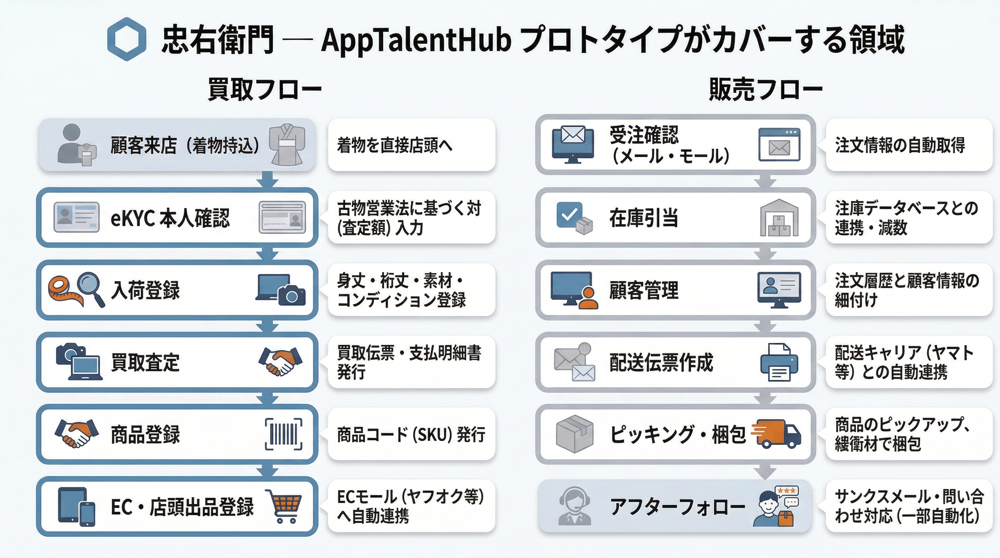
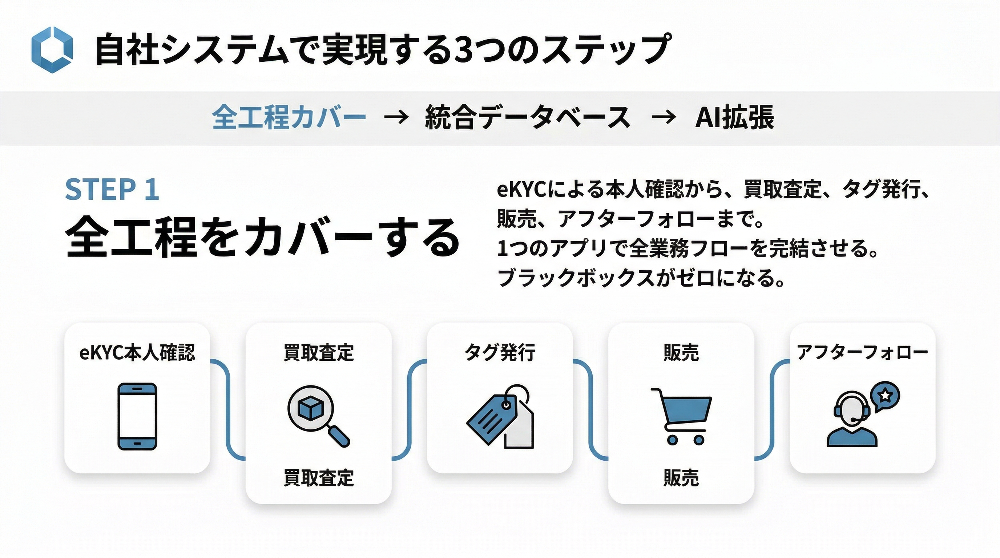
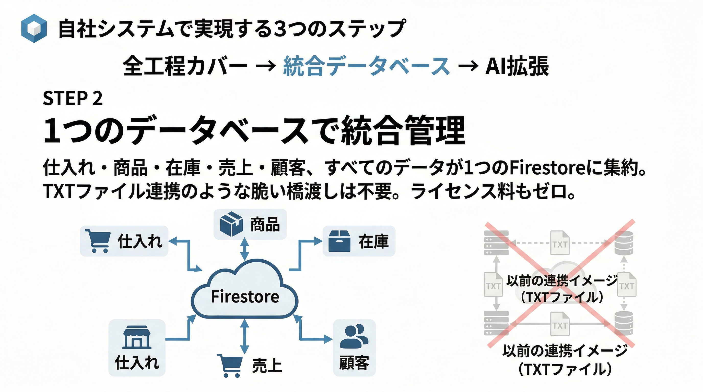
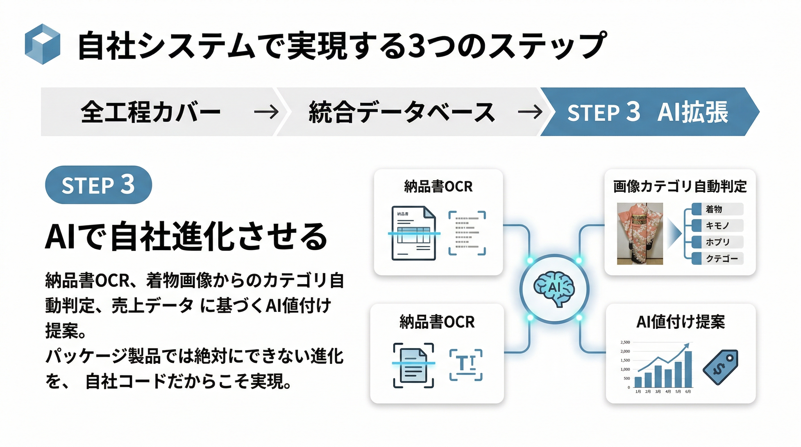
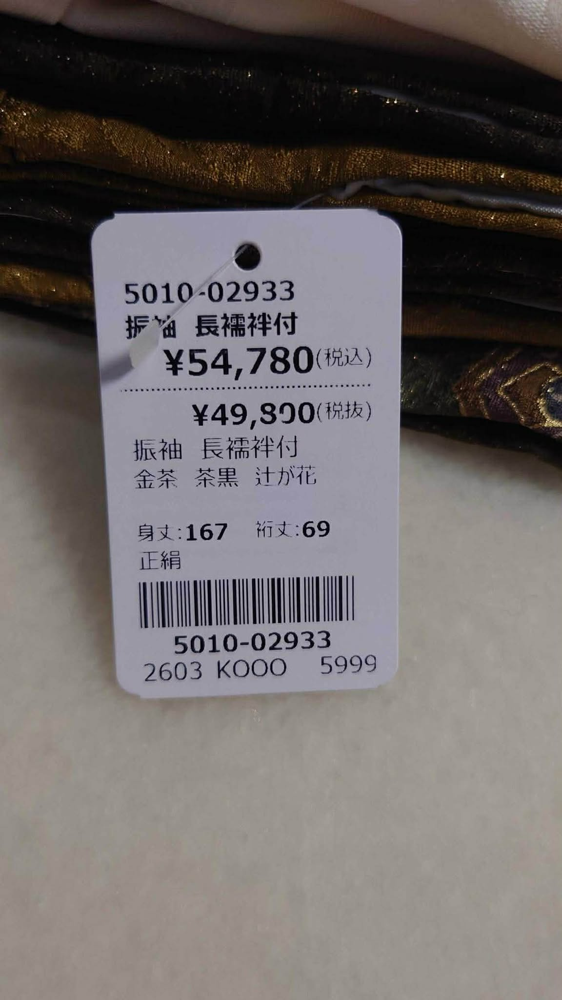
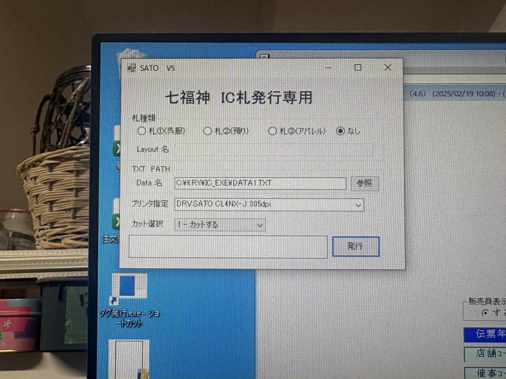
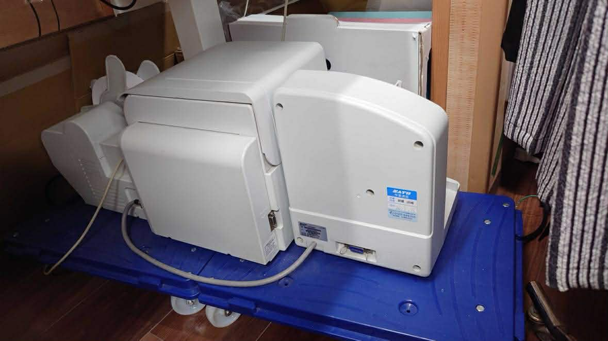
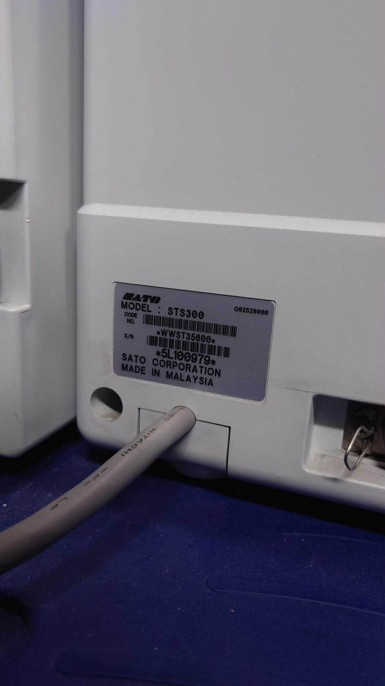

0アジェンダ
本日の流れ
- 現行フローの確認 — 七福神 + SATO V5 の運用を整理
- Notion導入の効果 — 5月導入予定のNotionでカバーできる範囲
- まだ残る課題 — Notionだけでは届かない領域
- プロトタイプのデモ — 「自分ならこう運用する」を形にしたアプリ
- 3ステップ構想 — 全工程カバー → 統合DB → AI拡張
- ディスカッション — 次のアクション
1メイン資料
Before / After 比較ページ
現行フロー → Notion導入 → プロトタイプの3段階で、改善の全体像を可視化。画像・改善ポイント・課題・3ステップ構想を全て含む統合資料
プレゼンのメイン HTML2補足資料
3フロー図（画像）


{kind=link}

{kind=link}

{kind=link}

{kind=link}

4現場写真
{kind=link}

{kind=link}

{kind=link}

{kind=link}

5よくある質問（経営者の方へ）
「うちはNotionでうまく回ってるけど、わざわざ変える必要ある？」
Notionが回っているなら、それは素晴らしいことです。無理に変える必要はありません。
ただ、Notionは「データベース」であって「アプリ」ではありません。バーコードスキャンでの販売、レシート発行、本人確認（eKYC）はNotionだけではできないため、結局は別のツールとの併用が必要になります。ツールが増えるほど、データの二重入力や連携の手間が生まれます。
もし「Notion + 七福神 + SATO」の3つを使い分ける運用に現場が慣れているなら今はそれでOK。ただ、2店舗目・3店舗目に展開するとき、その運用を新しいスタッフに教えるコストは考えておく価値があります。
「自社開発って、開発費が高くつくのでは？」
従来の受託開発なら、この規模のシステムで500万〜1,000万円はかかります。
しかし、AIコーディング（Claude Code等）を使えば、1人のエンジニアが数日でプロトタイプを作れる時代になっています。実際にこのプロトタイプは、AIと人間の協業で作られています。
ランニングコストも、Firebase無料枠なら月額¥0。Notionの¥1,650/人×20名＝月額¥33,000と比べても、年間で約40万円の差が出ます。
「作った人がいなくなったら、誰がメンテナンスするの？」
これが一番多い懸念で、もっともな質問です。
答えは2つあります。まず、コード自体がAIで生成されているため、AIにメンテナンスも任せられます。「この画面にフィルターを追加して」「このレポートを月次で出して」といった要望を、AIに日本語で伝えるだけで対応できます。
次に、コードはGitHubに残り、SERVICE_SPEC.md（仕様書）も整備されています。仮に別のエンジニアが引き継いでも、仕様を読んでAIに指示すれば改修可能です。パッケージ製品のベンダーロックインより、実はリスクが低いと考えています。
「七福神をやめて大丈夫？ 長年使ってきた実績があるのに」
七福神は呉服店向けに長年磨かれた良いソフトです。いきなり全部置き換える必要はありません。
おすすめは並行運用から始めることです。まず入荷〜査定の工程（七福神がカバーしていない領域）をこのアプリで管理し、効果を検証する。現場が慣れてきたら、販売・在庫管理も段階的に移行する。
七福神にしかないデータがあれば、CSVエクスポート→インポートで移行できます。「いきなり切り替え」ではなく「じわじわ置き換え」が現実的なアプローチです。
「うちのスタッフはITに詳しくない。使いこなせる？」
現在、スタッフは「七福神で商品登録 → SATO V5でタグ印刷 → 別のシステムで売上管理」と、3つのソフトを使い分けています。
このアプリならブラウザを1つ開くだけ。スマホやタブレットでも動きます。QRコードをスキャンすれば商品が自動で入る。実は、3つのソフトを覚えるより簡単です。
また、UIは日本語で、買取は「顧客選択→査定→確認→完了」のステップ式ガイドになっているので、手順に迷いません。
「セキュリティは大丈夫？ 顧客情報を扱うのに」
データはGoogleのFirebase（Firestore）に保存されます。Googleのセキュリティ基盤の上に乗っているため、自社サーバーを立てるよりも堅牢です。
アクセス制御は Firebase Auth（メール/パスワード認証）で保護。Firestoreのセキュリティルールにより、認証済みユーザーのみがデータにアクセスできます。
古物営業法で求められる本人確認記録の保存（3年間）にも、Firestoreのデータ保持で対応可能です。
「これ、うちの会社でも使える？ 着物以外でも」
使えます。このシステムの本質は「買取→在庫管理→販売」のフローを一気通貫で管理すること。着物に限らず、ブランド品、古着、骨董品、中古家電など、古物商全般に応用可能です。
カテゴリやコンディションの選択肢を変えるだけで、別業種に展開できます。実際、そうした横展開（RaaS: Retail as a Service）も構想の一部です。
「自社の業務フローに合わせてAIにカスタマイズを指示する」—— これが、パッケージ製品では絶対にできない、自社システムの最大の強みです。
「結局、何から始めればいいの？」
3ステップで考えてください:
- まず見てみる — 今日このデモを触ってみてください。買取の流れ、QRスキャン販売、ダッシュボードを体験する
- 1つだけ試す — いきなり全部ではなく、「入荷登録だけ」「棚卸しだけ」など1工程をこのアプリで試す。現場の反応を見る
- 効果が出たら広げる — 現場が「これは楽」と感じたら、買取→販売→顧客管理と段階的に移行する
大事なのは「全部一気に変える」ではなく「小さく試して、効果を確認してから広げる」こと。リスクゼロで始められます。
「データが飛んだらどうするの？ バックアップは？」
FirestoreはGoogleのクラウド上で自動的に冗長化されています。データセンター障害が起きても、別のリージョンにコピーが残ります。
加えて、定期的なエクスポート（CSV/JSON）を自動化することも可能です。万が一Firebaseを離れたくなった場合でも、全データを手元に持ち出せます。
ちなみに、七福神のデータはローカルPCに保存されていることが多く、そのPCが壊れたら復旧できないリスクがあります。クラウドの方がむしろ安全です。
「ネットが切れたら仕事が止まるのでは？」
Firestoreにはオフラインキャッシュ機能があり、一時的にネットが切れてもアプリは動き続けます。接続が復旧した時点で自動的にデータが同期されます。
とはいえ、現代の店舗でWi-Fiが完全に使えない状況は稀です。スマホのテザリングでもバックアップできます。七福神もPC上で動いている以上、PCが壊れたら同じく止まりますので、リスクは同程度かそれ以下です。
「古物台帳の法的要件は満たせるの？」
古物営業法では、買取時に「品目・数量・特徴・相手方の氏名住所・確認方法・取引年月日」の記録が義務付けられています（3年保存）。
このプロトタイプでは、買取トランザクションに全項目を記録し、顧客の本人確認情報（身分証種類・確認日時）も保存しています。Firestoreのデータは削除しない限り永続的に残るため、3年保存要件は自動的に満たされます。
さらにeKYCを導入すれば、身分証の画像データも電子的に保管でき、紙の台帳管理から解放されます。
「うちはスマレジを使ってるんだけど、連携できる？」
スマレジにはAPIが公開されており、技術的には連携可能です。売上データの自動同期、商品マスタの共有などが実現できます。
ただし、このプロトタイプ自体にPOS機能（QRスキャン→カート→決済→レシート）が組み込まれているので、スマレジを使わずにこのアプリだけで完結することも可能です。
既にスマレジの契約がある場合は連携、なければこのアプリ単体で —— どちらにも対応できる柔軟性があります。
「ECサイト（ヤフオク・メルカリ等）との連携は？」
現時点では手動出品ですが、各プラットフォームのAPIを使った自動出品は技術的に実装可能です。
具体的には、商品データ（写真・品名・価格・サイズ）がすでにFirestoreにあるので、ボタン1つで複数のECサイトに同時出品する機能を追加できます。在庫ステータスと連動させれば、店頭で売れた瞬間にECの出品を自動取り下げすることも可能です。
これはパッケージ製品では絶対にできないカスタマイズの好例です。
「棚卸しって本当に楽になる？ 今は手作業で丸1日かかる」
このアプリの棚卸し機能は「セッション型」です。棚卸しセッションを開始し、商品のQRコードをスマホでスキャンしていくだけ。
スキャンが終わると、「システム上は在庫なのにスキャンされなかった商品」が自動で一覧表示されます。つまり、紛失・盗難の検出が即座にできます。
手書きチェックリストとの突合作業がゼロになるので、丸1日の作業が数時間に短縮できる見込みです。複数人で同時にスキャンすることも可能です。
「SATOのプリンターはもう使えなくなるの？」
SATO STS300をそのまま使い続けることも可能です。ブラウザから印刷する場合、SATOに限らず既存のラベルプリンターに対応できます。
ただし、もっと安価な選択肢もあります。BrotherのQL-800シリーズ（約1万円）でも十分なクオリティのバーコードラベルが印刷できます。七福神+SATO V5のTXTファイル連携という複雑な仕組みが不要になるため、プリンターの選択肢が広がるというのもメリットです。
「AI値付けって本当にできるの？ 着物の価値は経験がないとわからない」
おっしゃる通り、着物の鑑定は奥が深く、AIがベテランの目を完全に代替するのは難しいです。
ただし、「過去の売上データに基づく参考価格の提示」は今すぐできます。例えば「大島紬・状態A・裄丈68の商品は、過去の平均販売価格が¥48,000」という情報を査定時に表示する。最終判断は人間がするが、根拠となるデータをAIが出す —— これだけでも新人スタッフの査定品質が格段に上がります。
将来的には、着物の画像から産地・技法を推定するAI鑑定データベースの構築も視野に入れています。これは世界初の試みになりえます。
「2店舗目を出すとき、このシステムはどうなる？」
Firebaseのプロジェクトを共有するだけで、追加費用ゼロで2店舗目を接続できます。
在庫データが1つのデータベースにあるので、「本店にある着物を佐鳴台店から確認・移動する」といった店舗間連携も自然にできます。Notionでも可能ですが、POS・バーコードまで含めた一気通貫の2店舗管理は、このアプリならではです。
七福神で同じことをやろうとすると、追加ライセンスとネットワーク設定が必要になります。
「導入にどれくらいの期間がかかる？」
プロトタイプはすでに動いている状態です。本番環境への移行は以下のステップで進められます:
- 1週目: Firebaseプロジェクト作成、初期データ投入、スタッフアカウント作成
- 2〜3週目: 1工程（入荷登録 or 棚卸し）で試験運用
- 4週目〜: フィードバックを反映しながら工程を順次拡大
大規模なシステム移行のような「半年かけてカットオーバー」は不要です。来週から1工程だけ始めることができます。
「Googleに依存するのが怖い。サービス終了したらどうなる？」
Firebaseは2011年から続くGoogleの主力サービスで、世界中の数百万のアプリが利用しています。突然の終了リスクは極めて低いです。
仮にFirebaseが終了する場合でも、データはJSON/CSVでエクスポート可能です。フロントエンド（React/Next.js）のコードはそのまま残るので、データベースだけを別のサービス（Supabase, PlanetScale等）に差し替えればOK。全部作り直しにはなりません。
むしろ、京都ナイスウェアという1社に依存する七福神の方が、ベンダー消滅リスクは高いとも言えます。
「補助金は使える？ IT導入補助金とか」
IT導入補助金（デジタル化基盤導入枠）の対象になりえます。会計・受発注・決済・ECに関するITツール導入が対象で、このシステムは在庫管理・POS・受発注を含むため要件を満たす可能性があります。
ただし、IT導入補助金は「IT導入支援事業者」として登録されたベンダー経由での申請が必要です。AppTalentHubがIT導入支援事業者として登録するか、登録済みのパートナーと組むことで申請可能になります。
また、小規模事業者持続化補助金（販路開拓目的）でも、EC連携やDXツール導入として申請できる場合があります。
「事業を売却するとき、このシステムはどう評価される？」
M&Aの現場では、「独自のDXシステムを持っている事業」は高く評価されます。属人的なノウハウではなく、仕組みとして業務が回る状態は、買い手にとって大きな安心材料です。
コードはGitHubに、仕様はSERVICE_SPEC.mdに、運用マニュアルはドキュメントに。すべてデジタルで引き継ぎ可能です。袴田さんがルーベラ→忠右衛門で経験されたように、PMI（統合作業）の大変さは身をもってご存知かと思います。このシステムがあれば、次の承継者の負担は大幅に軽減されます。